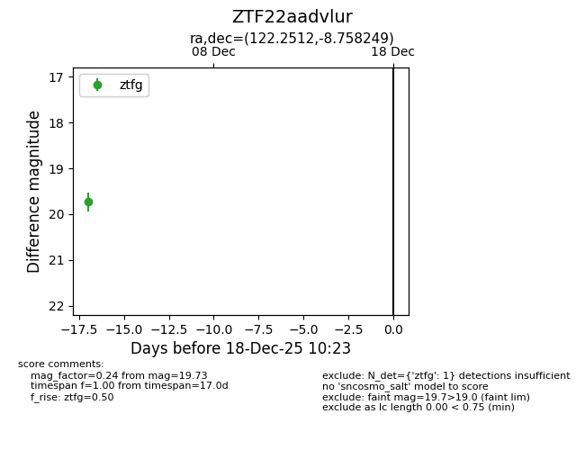
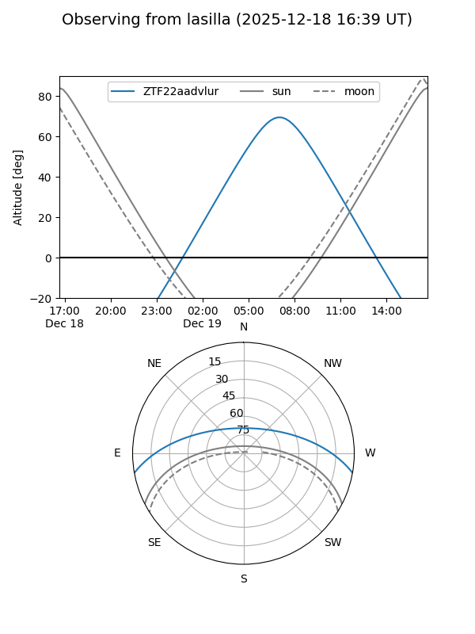
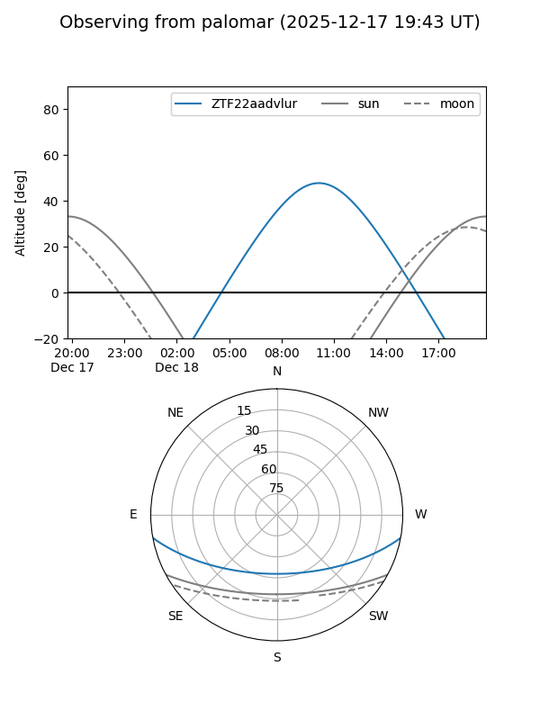

ZTF22aadvlur
Target ZTF22aadvlur at 2025-12-18 11:17
Aliases and brokers:
FINK: fink-portal.org/ZTF22aadvlur
Lasair: lasair-ztf.lsst.ac.uk/objects/ZTF22aadvlur
ALeRCE: alerce.online/object/ZTF22aadvlur
alt names
ZTF22aadvlur (ztf,fink_ztf)
Coordinates:
equatorial (ra, dec) = 122.2512,-8.75825
equatorial (HMS+DMS) = 08:09:00.29,-08:45:29.69
galactic (l, b) = (229.9388,+12.86307)
Photometry
last ztfg=19.73
1 ztfg detections
Lightcurve

Visibility


Additional plots